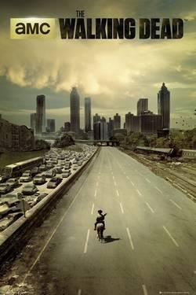

Podstawowe informacje:
twórca: Frank Darabontgatunek: Dramat, Horror
rok wydania: (2010-)
Opis:
Serial opowiada o czasie następującym po pandemicznej apokalipsie, po której świat opanowały zombie. Szeryf Rick Grimes (Andrew Lincoln) podróżuje wraz z rodziną i z garstką ocalałych, w bezustannym poszukiwaniu bezpiecznego schronienia. Ciągła presja oraz codzienne zmagania się z zagrożeniem i śmiercią zbierają krwawe żniwo, popychając wielu ku otchłani najgłębszego ludzkiego okrucieństwa. W trakcie walki o przeżycie swojej rodziny, Rick odkrywa, że wszechogarniający strach ocalałych może być dużo bardziej niebezpieczny, niż przemierzające świat zombie.
